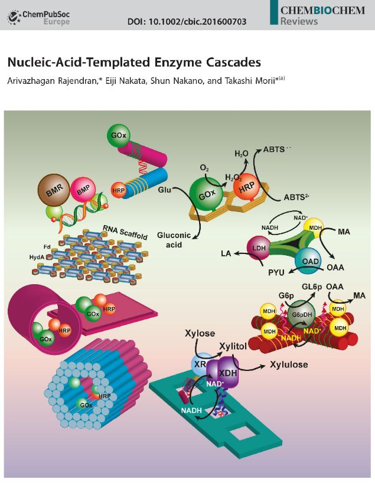

ナノスケールの精密制御
生体システムの理解・検出・制御に向け、プログラム可能な核酸構造と生体機能性ナノ材料を研究しています。
- DNAオリガミとNanoBioインターフェース
- 生体分子の安定性と認識
- 生体機能性ナノ粒子
ナノバイオ材料では、生体分子が持つプログラム可能性と先端材料の光学・電子・触媒機能を融合し、基礎化学を実用的な価値へつなげます。
生体システムの理解・検出・制御に向け、プログラム可能な核酸構造と生体機能性ナノ材料を研究しています。
エネルギーの捕集・貯蔵・変換を高効率化する有機・無機・ハイブリッドナノ材料を設計します。
環境課題を資源回収の機会へ変える機能性材料と持続可能なプロセスを研究します。
核酸化学とDNAナノテクノロジーで培った基盤を、有機・無機・ハイブリッドナノ材料へ展開し、健康、エネルギー、環境分野の応用につなげています。
非標準DNA構造、DNA–タンパク質複合体、低分子相互作用における認識・フォールディング・機能を研究します。
2D・3D DNAオリガミのプログラム可能な集合、ライゲーション、安定化を行い、NanoBio応用のための位置指定可能な足場を構築します。
光捕集、分子認識、生体関連機能のため、分子設計に基づくソフト材料・炭素系ナノ材料を研究します。
エネルギー変換、CO₂還元、カーボンネガティブ科学に向けたナノ粒子、ヘテロ構造、低次元触媒を設計します。
DNAナノテクノロジー、核酸化学、機能性ナノ材料に対する競争的・学内研究支援です。
トポロジー的に連結したDNAへのレトロウイルス組込みを利用したDNA構造解析とウイルス阻害剤スクリーニング。
KAKENHI 21K05274 ↗トポイソメラーゼを標的とする抗がん剤スクリーニングのためのDNAオリガミプラットフォーム。
KAKENHI 16K17934 ↗ヒトゲノムの修飾・損傷を精密検出するための化学ツール。
KAKENHI 15H02189 ↗分子レベルでの遺伝子発現制御とその解明。
KAKENHI 24225005 ↗核酸化学、DNAナノテクノロジー、NanoBioインターフェース、およびエネルギー・環境のための機能性材料に関する最近の代表的研究成果です。


DNAオリガミ、核酸構造、NanoBioシステムに関する研究は、学術誌表紙や国内外の科学ニュースで紹介されています。
研究、共同研究、学術活動の最近の主な動きを掲載しています。下のリンクから全時系列記録をご覧いただけます。
研究論文が採択： ACS Applied Nano Materials.
研究論文が採択： Applied Materials Today.
次の大学から訪問学生3名を受け入れ： 浦項工科大学（POSTECH）、韓国。研究ディスカッションを実施。
研究論文が採択： Journal of Molecular Structure.
次の機関から学内研究費2件を獲得： 京都大学エネルギー理工学研究所 （CO₂変換ナノ材料）。
次の大学からインターンシップ学生2名が ヴィシュヴェシュヴァラヤ工科大学 研究グループに参加。
次の財団から研究助成を獲得： 公益財団法人ヒロセ財団.
学位および職歴を一つの時系列記録としてまとめています。
博士・修士・学部生および国際インターン研究者を指導しています。最近の確認済み研究課題には、DNAナノ材料、ナノ粒子触媒、CO₂変換が含まれます。
指導実績をすべて見る →研究所委員会活動、学術誌査読、化学・核酸関連学会での活動。
学術貢献をすべて見る →科学教室、研究室訪問、学会運営、招待教育プログラム、公開教育資料などの活動。
アウトリーチ実績をすべて見る →基礎物理化学を、持続可能なエネルギーと炭素管理の現代的課題に結び付ける授業を行っています。
確認済み授業歴、2022年–現在 · 英語
毎年の授業歴、2015年–現在 · 英語
核酸化学、DNAナノテクノロジー、有機・無機ナノ材料、エネルギー変換、CO₂還元に関する研究相談・共同研究のお問い合わせを歓迎します。
京都大学エネルギー理工学研究所 附属カーボンネガティブ・エネルギー研究センター
〒611-0011 京都府宇治市五ケ庄 京都大学エネルギー理工学研究所 本館 M-576E